01
Heroic, not childish
The product world uses strong color, guardian archetypes, and dramatic lighting, but keeps packaging premium through matte black, metallic gold, restrained typography, and tactile print details.
SERES SIX is a six-part botanical elixir system inspired by Chinese herbal traditions and modern functional wellness. The brand direction is bold, premium, color-coded, and heroic without copying existing characters or entertainment IP.
The product world uses strong color, guardian archetypes, and dramatic lighting, but keeps packaging premium through matte black, metallic gold, restrained typography, and tactile print details.
Characters, cloud motifs, brush accents, and seal-like details create a refined Chinese-inspired feel while avoiding tourist clichés and “ancient secret” language.
The copy system stays in wellness-safe territory: botanical support, vitality, resilience, balance, mobility, clarity, and healthy inflammatory response support.
Consumers who want functional products to feel more expressive, ritualized, and shelf-worthy than typical beige longevity packaging.
People already buying nootropic drinks, adaptogenic beverages, tinctures, and supplement systems, but looking for a clearer multi-formula ritual.
Fans of team-based visual systems, character art, and bold color worlds who still expect adult, high-quality packaging and credible wellness language.
| No. | Formula | Color | Positioning | Support language |
|---|---|---|---|---|
| 01 | POWER力 | Red | Energy + Strength | Daily botanical support for vitality and strength rituals. |
| 02 | FLOW流 | Blue | Circulation + Ease | Supports healthy flow, ease, and balance. |
| 03 | FOCUS神 / 专 | Green | Clarity + Discipline | Supports mental clarity and disciplined focus. |
| 04 | SPEED速 | Gold | Movement + Drive | Supports mobility, movement, and active momentum. |
| 05 | MIND智 | Black / Slate | Cognition + Memory | Supports cognition, memory, and long-term mental performance. |
| 06 | AWAKE醒 | Magenta | Alert + Aware | Supports alertness and a clear daily start. |
Concept copy is intentionally phrased as general wellness support rather than disease prevention, treatment, or cure language. Final packaging should be reviewed by regulatory counsel before production.
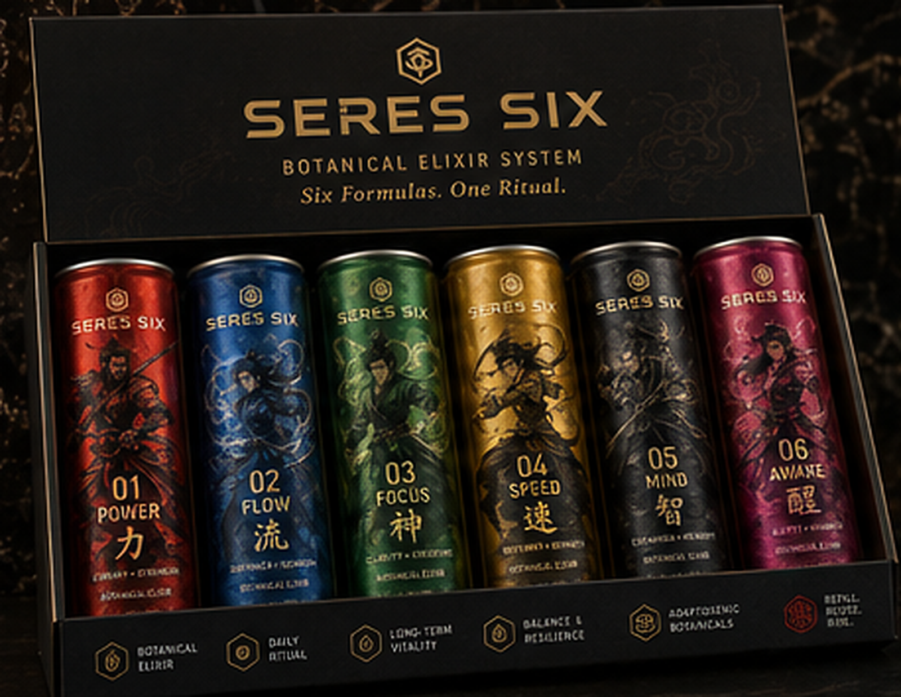
The clearest retail hero for the color-coded formula system: six slim cans presented as one premium ritual set, with each formula visually differentiated through color, number, English name, Chinese character, and guardian artwork.
Recommendation: Use this as the lead DTC and specialty retail SKU when the objective is trial, gifting, and fast brand comprehension.
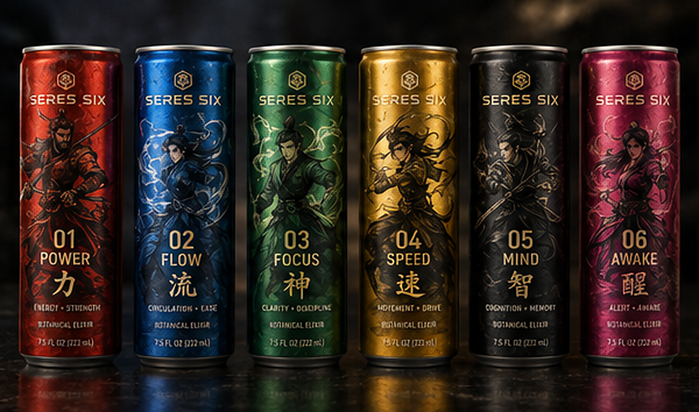
The strongest brand-recognition image: six individual cans stand side by side, making the formula architecture instantly readable while preserving a dramatic, premium wellness feel.
Recommendation: Use across landing-page hero sections, launch ads, retail sell sheets, and investor materials.
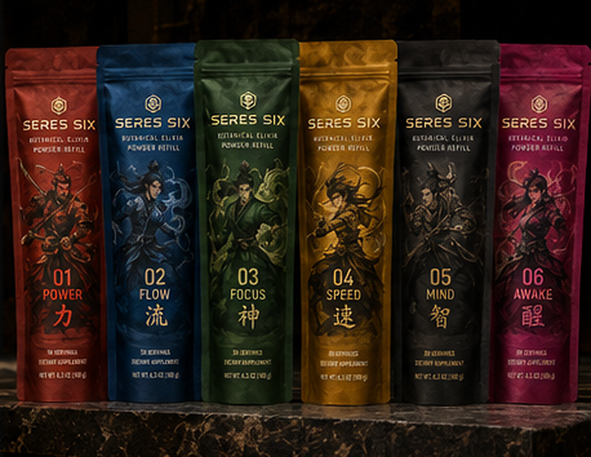
The pouch system translates the six formulas into a lower-waste, repeat-purchase format while keeping the dramatic guardian-panel identity intact.
Recommendation: Position as the eco-friendly subscription product after the customer has learned the system through cans or elixir bottles.
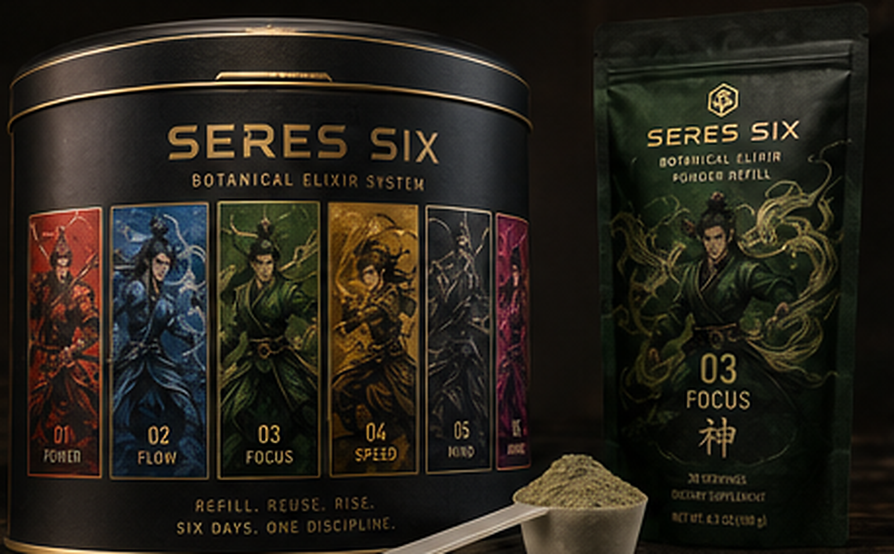
A reusable canister anchors the system as a long-term ritual rather than a disposable novelty. Formula panels around the tin create a premium shelf object with collectible energy.
Recommendation: Make this the best repeat-purchase economics play: tin as the durable starter item, pouches as the recurring replenishment.
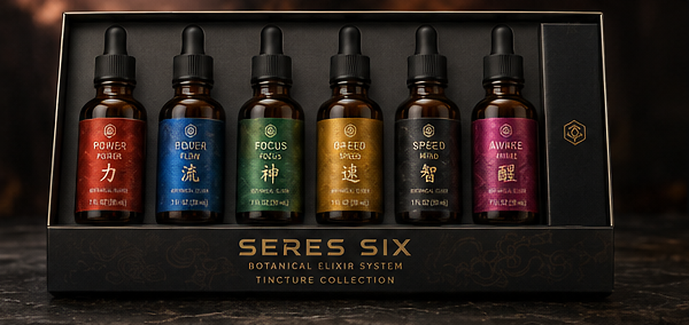
Amber glass bottles and dropper caps make the system feel more serious and apothecary-led, while the color-coded labels keep the heroic formula architecture recognizable.
Recommendation: Use as a premium extension for customers who want concentrated botanical support and a more adult ritual format.
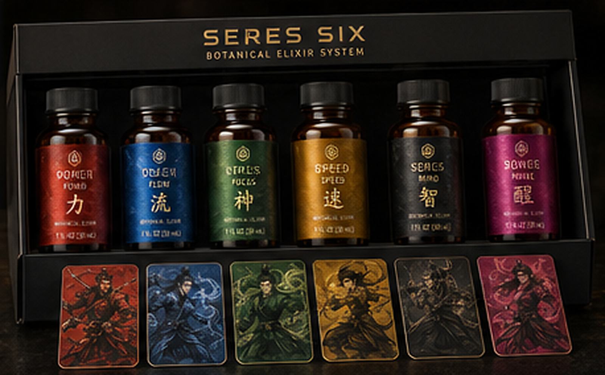
Small amber elixir bottles create a daily-course product that is more direct and giftable than tinctures, with character cards reinforcing the six-archetype ritual.
Recommendation: A strong premium starter kit candidate: easier to explain than tinctures and more giftable than bulk powder.
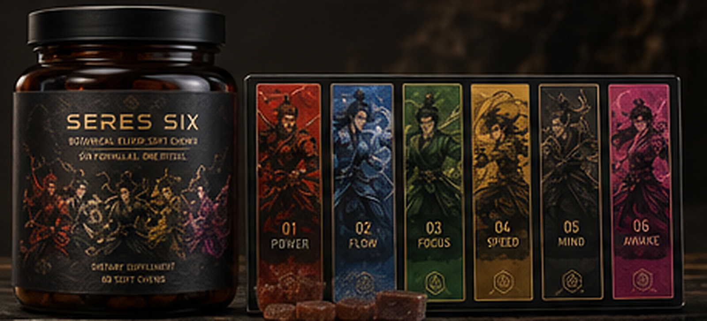
The amber jar and weekly tray bring the system into a more familiar supplement format while the guardian color strip prevents the product from becoming generic wellness packaging.
Recommendation: Use later as a mass wellness extension once the SERES SIX ritual language is established.
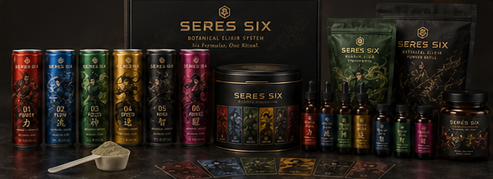
This frame demonstrates how the visual system scales across formats without losing cohesion: six colors, six guardians, one ritual language.
Recommendation: Use for brand-launch presentations, category strategy, investor decks, and packaging alignment meetings.
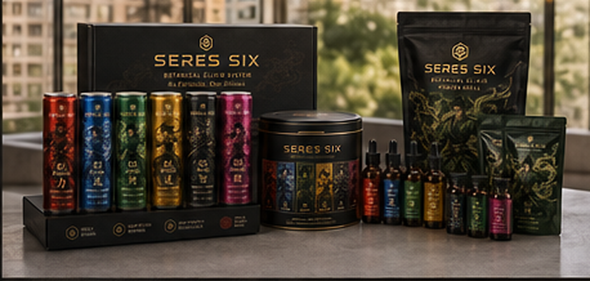
A cleaner retail and direct-to-consumer kit view shows how the system can live in a premium wellness environment without feeling childish or overly clinical.
Recommendation: Use for pitch materials focused on channel strategy, merchandising, and online kit configuration.
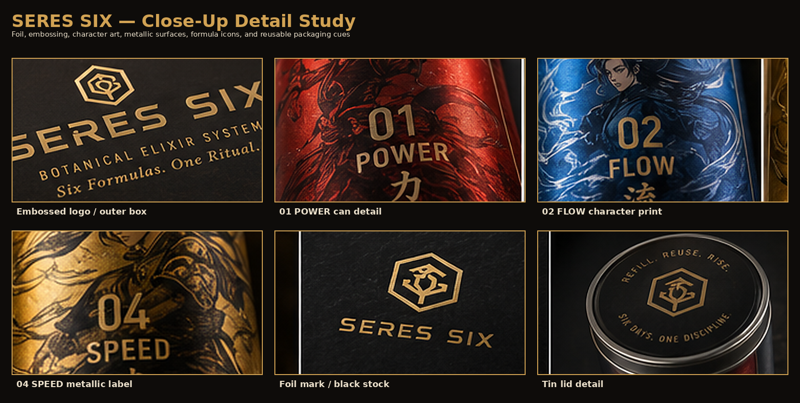
The detail study shows the tactile premium cues needed to move the concept beyond flat character packaging: metallic ink, embossed logo treatment, black stock, brush accents, and reusable-tin details.
Recommendation: Use this as a production briefing image for print vendors, packaging designers, and prototype teams.
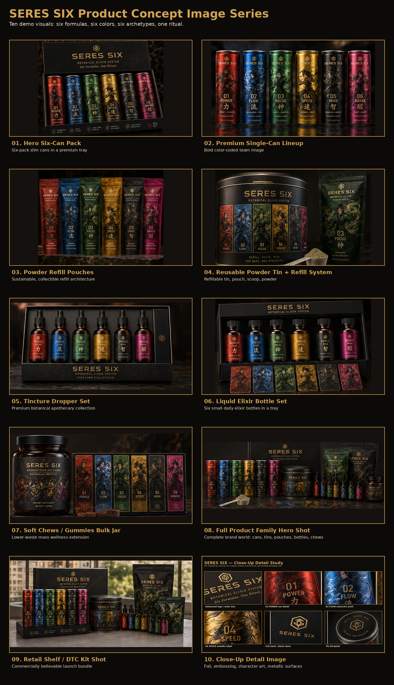
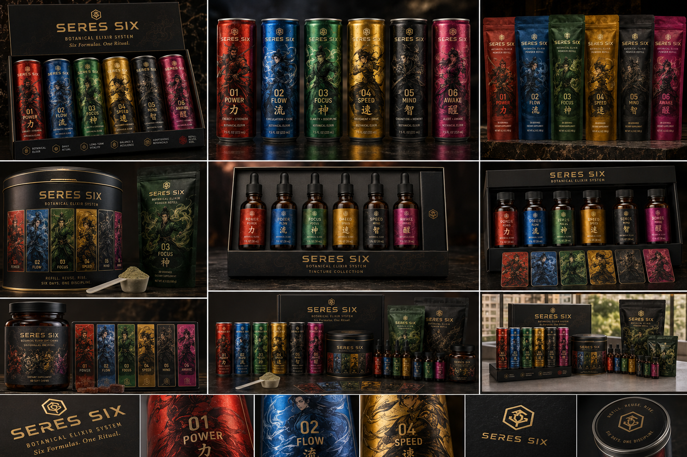
The strongest business direction is a hybrid architecture: use one highly visual hero product to teach the ritual, then attach lower-waste recurring formats and premium extensions.
Production note: generated label microtext may be visually imperfect. Treat these images as polished creative-direction renders; final packaging art should be re-typeset, proofed, and legally reviewed.